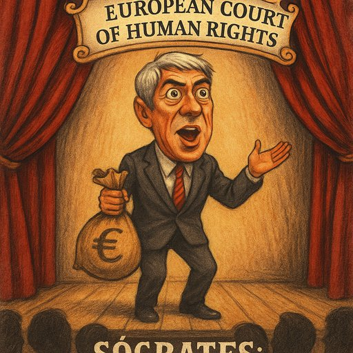

Publicado em 2025-07-01 14:46:34
Autor: Augustus Veritas
Dizem que o tempo cura tudo. Mas em Portugal, o tempo apenas anestesia. E quando se trata de justiça, anestesia tanto que os processos adormecem, roncam, e às vezes... ressuscitam em Bruxelas. José Sócrates, o eterno protagonista da peça chamada "Operação Marquês", decidiu mudar de palco. Aborrecido com o teatro lusitano, apresenta agora a sua queixa no Tribunal dos Direitos do Homem, exigindo encenação europeia para o seu drama jurídico.
Durante mais de uma década, a ópera ficou por acabar. A orquestra tocava, os advogados dançavam, e o público – o povo português – assistia entre bocejos e suspiros. Mas eis que o ex-primeiro-ministro, munido da toga da vítima e da capa de injustiçado, voa para Bruxelas, onde espera ser a estrela principal de um novo julgamento. E tudo isto enquanto em Portugal, os autos se empilham e as penas se prescrevem como pão velho.
Dizem que Carlos Santos Silva era o "ajudante mágico", o banqueiro de confiança, o condutor dos rios de dinheiro. Mas em vez de condenações, temos capítulos e recursos, decisões anuladas e sessões suspensas. E a justiça portuguesa, coitada, aparece com reumático, a tropeçar na própria toga.
Na Europa, Sócrates canta de novo. Reprova o sistema português com a voz embargada de indignação. E muitos perguntam: será que desta vez, ao invés de justiça, teremos apenas mais um espetáculo de vaidades e retórica?
“Portugal é um país onde a justiça é tão lenta que o tempo tem tempo de mudar de século.” — Um cidadão cansado
Que o público europeu não se iluda: o guião é velho, o protagonista conhecido e o desfecho... previsível. Sócrates continuará em cena, ora como ator principal, ora como vítima, ora como fantasma. E nós? Continuamos a assistir, pagantes, na plateia de um teatro em ruínas.
Para mais crónicas que expõem o absurdo com ironia, visita fragmentoscaos.eu.